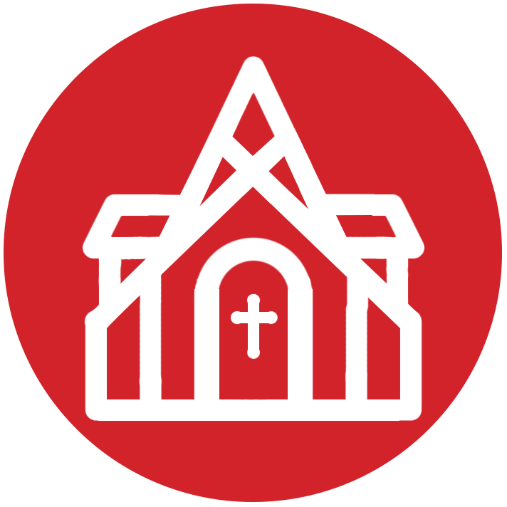

Religion in Newport
Introduction
In the twenty-first century, Rhode Island remains proud of its heritage as the only New England colony that promised true religious freedom. Roger Williams is often understood as a symbol for this liberty, which, the state’s most optimistic chroniclers will argue has guaranteed the most expansive freedom of conscience in the New World since the founding of Providence in 1636. Two years after Williams arrived in Providence, another group of dissidents from Massachusetts established the first European settlement on Aquidneck Island, a town called Pocasset (now Portsmouth). The following year, in 1639, these Antinomians found governance of their settlement to be frustratingly contentious and a group among them moved to the southern tip of the island to start Newport. These two new towns centered the very same principles of religious freedom that had inspired the outpost of Providence, with which they later joined to form the colony of Rhode Island. It is from this point of departure that Newport's religious history begins.
To most colonial Newporters, it was more important that their town be competitive in commerce than it be pure in religion. These dual priorities of mercantilism and liberalism allowed Newport to thrive as one of the most diverse towns in the early colonial period. Newport first attracted Baptists, then Quakers, Jews, Congregationalists, Anglicans and finally Catholics, among several other denominations and faiths. As author John Wild informs us, “there were, [in the mid-eighteenth century], no less than sixteen different religious groups in the small island less than twenty miles in circumference, and it was apparently customary for strangers to ask their visitors, ‘Pray, of what religion are you?’ and then to discourse with them at tea concerning their respective differences.” Religious diversity in Newport did indeed foster a community of general acceptance, but freedom of expression was not without its limits. This tour seeks to explore the range of religious beliefs and practices active in Newport, their relations with one another, and their implications for the broader society. In considering Newport’s early religious diversity with detail, we see how in action it complicates the common perception of Williams’ totally independent and free practice.
1. Great Friends Meetinghouse
Quakers arrived in Newport in 1657 and were among the first to test Newport’s promise of religious freedom. Having been either legally exiled from or functionally ostracized out of most other English colonies at the time, the Friends found safe haven in Newport. In the middle of the seventeenth century, Quakers worked to make their faith one of the most widely distributed Protestant denominations in the world. Historian William Warren Sweet attributes this range to their active missionary work rather than their own physical migration patterns. Indeed, upon arrival in Newport, the Quakers converted a number of the town’s most prominent figures to their denomination including William Coddington and John Coggeshall.
As was customary of fledgling communities like this, the first Quaker meetings in Newport began in the “large living rooms of well-to-do members.” Quaker worship is defined by its interest in the individual as compared to other forms of more congregationally-focused Protestantism. They believed in an inner light possessed by each person, which made all people equally capable of relating to God. This egalitarianism, in turn, deemphasized the role of esteemed clergy. As Sweet writes, “they did not come primarily to be instructed, but to achieve the feeling of oneness with the mighty God.” It is no surprise that such a democratic doctrine would appeal to many Newporters who had left Massachusetts precisely because the Bay Colony had been so strictly hierarchical in its worship practices.

By minimizing submission to an authority, Quakerism also opened up avenues for extra-religious pursuits. Throughout the colonial era, this focus was instrumental in the rise of Newport as a commercial hub. Despite the common presumption that early New England colonies existed on the basis of religious fervor, as early as the mid-seventeenth century, many settlers proved to be more interested in pursuing land than faith. In Newport, whose island geography limited the availability of land, it was lucrative maritime trade that promised fortunes to be made. This emphasis on commercialism over religiosity was of great concern to the pious organizations of neighboring colonies. Men like Coddington, however, found refreshing compatibility between their financial and political pursuits and Quaker beliefs. Thus, “within a decade [of their arrival], the Quakers were the commercial and political leaders of Newport.”
Once firmly established in Newport, Quakers began “their assault upon New England.” The missionary work and outreach of fervent believers that had gained Quakers a foothold in the North American colonies now looked to expand throughout the region. However, throughout the colonial period, no place proved as tolerant of religious diversity as the towns of Rhode Island. Quakers did find success in the region and gathered annually in Newport for the New England Yearly Meeting until 1905, when it was moved to Providence. The meetinghouse was constructed in 1699 and is the oldest building of worship in Newport. It is now owned by the Newport Historical Society.

English Puritans Mary and William Dyer arrived in Boston in 1635. They quickly became swept up in the Antinomian Controversy that consumed the Massachusetts Bay Colony from 1636 to '38, in which Mary sided with Anne Hutchinson and thus was exiled. Hutchinson and other dissidents believed that the established church in Massachusetts had not gone far enough in breaking from the Church of England and sought further reforms to their worship practices. The Dyers moved to settle Portsmouth and then Newport, where they were an influential founding family. Mary left Newport for England twelve years later and discovered the Quaker faith while traveling. The religion’s founder, George Fox, professed a radical egalitarian concept of worship, an idea which appealed to many Puritans who had not found the practices of the Congregationalists pure enough.
Having become a motivated missionary for the Society of Friends, Dyer returned to New England in 1657 to spread the word of Quakers. After landing in Boston, however, she was imprisoned and banished from the Bay Colony. Persistently defiant and repeatedly disciplined, she eventually faced her execution in 1660 and became a martyr for the Quaker cause.
2. United Baptist Church
Anne Hutchinson was a leader in the Antinomian controversy, pushed out of Massachusetts for her support of radical reforms to the Puritan Church. She believed in a covenant of grace, over that of works, implicating that it was not one's strict obedience to the Puritan moral code that would assure salvation. Such assertions were perceived to be a fundamental threat to the power of the established church and thus Hutchinson and other dissidents were banished from the Bay Colony in 1638. Hutchinson lead a group of Antinomians south into Rhode Island, lured by Roger Williams' promise of freedom of conscience. There they founded the town of Pocasset (now Portsmouth) on Aquidneck Island where they worshipped freely. However, the settlement was politically unstable and Hutchinson left for Long Island shortly thereafter.
Preacher and physician John Clarke also left Massachusetts for Portsmouth in the Antinomian crisis, but when the Portsmouth settlement sputtered, he landed in Newport. There he founded what he called the "First Church of Christ of Newport." By 1644, Clarke's church became generally understood as Baptist, but his theology did not fit neatly into any of the distinct sects that were emerging elsewhere. His most important theological contribution to Newport was the belief that "an intense fellowship—not a highly defined organization—was vital. He favored a churning discussion of religion, not a procrustean creed." In addition to transforming the ways in which Newporters interacted with their churches, Clarke was instrumental in securing Rhode Island's royal charter of 1663 which famously secured religious freedom in the colony.
The sign mounted on this chapel dates the establishment of United Baptist to 1638, a year before the town of Newport was even founded. The congregation likely looks to the settlement of Portsmouth by Antinomian dissidents of Massachusetts Bay Colony as its ultimate origin. One must be wary, however, of applying contemporary denominational distinctions to centuries-old practices, or of assuming continuity in a lineage that has passed through times of significant religious transformation. It seems that the first Church at Newport, led by John Clarke, underwent multiple iterations of its beliefs and practices before becoming decidedly Baptist in 1644.
Clarke's beliefs had always generally fallen in this camp—he did indeed reject infant baptism—but he also "rejected the vital component of the traditional hierarchy that put the clergy in a position of spiritual superiority." Clarke himself was never ordained and, according to historian Sydney James, "roughly a third of the men in the flock served as preachers." Hand in hand with Clarke’s stance on ordination was his disinterest in a covenant, which he viewed as a restrictive form of church membership. The demanding and unorthodox form of worship he favored caused a number of early Newport residents to split from the church in 1641. Among the men left searching for a spiritual home were William Coddington and John Coggeshall, who later found Quakerism in the following decade. The Baptist congregation continues to worship in this building every Sunday at 10, with services open to all.
3. Touro Synagogue
Born in 1738 in Amsterdam, Isaac Touro moved to Jamaica twenty years later, and then to Newport in 1760. He traversed the Atlantic to be a spiritual leader in the New World. At the time of his arrival in Newport, construction on what would later be named Touro Synagogue had already begun. He served as the synagogue’s hazzan, leading them in Sephardic worship practices. He was also a loyalist and stayed in Newport throughout the British occupation during the Revolutionary War. His sons, Abraham and Judah Touro, were prominent Newport philanthropists; in 1823, the former donated a substantial gift to the synagogue for restoration, after which the building was renamed in honor of the family.
Aaron Lopez was born in 1731 to Portuguese conversos, Jews that masqueraded as Catholics to avoid persecution during the Inquisition. Lopez arrived in Newport in 1752 to reclaim his Jewish identity. Here, he changed his first name from Duarte to Aaron. He became a giant in Newport’s maritime trade during its height in the eigtheenth century. After trading in the spermaceti market, he opened a candle-making factory in 1756 and formed a trust to control regional distribution in 1760. Other lucrative markets he tapped included rum and chocolate. He traded internationally with a fleet of 30 vessels, with significant business in the West Indies. He rose to become the wealthiest man in Newport among his contemporaries. His good fortune ended with the upheaval of the Revolution. He was one of the financiers of Touro Synagogue and also donated significanly to the Redwood Library.
Like Quakers, Sephardic Jews were a religious minority that arrived in Newport early and tested the town’s capacity for tolerating diversity. Also like the Quakers, the Jewish congregation could boast many of Newport’s most industrious leaders. The first Jews arrived in Newport around 1658 from Barbados, to which they had originally made the journey out of Spain and Portugal. In Newport, they gathered under the name Nephuse (Scattered) Israel, later to be called Jeshuat Israel. This synagogue was not constructed until 100 years later, during the height of Newport’s prominence as an Atlantic trading port. Its architect, Peter Harrison, had been praised for the recent construction of the Redwood Library, and would go on to build the Brick Market on the town square. Being a stranger to the architectural details of Jewish temples, Harrison was advised closely by Isaac Touro on the design of the interior. The synagogue has hosted worship services for an intermittent congregation over its several centuries. It is the oldest synagogue building in the United States and is open to the public for worship services and tours.
While the very presence of a Jewish community in the North American colonies was itself a remarkable achievement in religious tolerance and diversity for the seventeenth century, such ideals of liberty were in reality restricted. Jews had to fight British colonial law to be allowed to participate in mercantile trade and to gain citizenship. The Plantation Act of 1740 authorized naturalized citizenship for any foreign Protestant with seven years’ residence in an American colony. Catholics were formally barred from this provision, but Jews were often afforded exceptions. However, when Aaron Lopez filed for citizenship in 1751, he was rejected. He appealed the issue to the Rhode Island General Assembly which kicked the case up to the Superior Court. He was denied again, with reference to a 1663 Rhode Island law that aimed its doctrine of inclusion only at Christians. Failed by Rhode Island’s promise of liberty, Lopez went to Massachusetts to gain citizenship, but continued to live in Newport.
4. Union Congregational Church
This church on Division Street continues the story of an imperfect execution of Rhode Island’s founding liberal ideal. Union Congregational, built 1834, was the first free African church in Newport, but the history of its congregation dates back much further. In the colonial era, Newporters engaged heavily in the slave trade, taking advantage of their favorable position as a port city. Without tracts of land suitable for vast plantations, Newporters primarily facilitated the transport of slaves from West Africa to the Southern colonies and Caribbean, often trading in rum. Many Newporters also kept slaves of their own, usually training men and boys in trades like shipbuilding or furniture-making, and women in domestic work. Slaves in Newport had frequent contact with their white keepers, making the two populations closely interconnected. Though they lived, worked, and worshipped alongside one another, the strict hierarchy of ownership was maintained. In some cases, slaves were freed and continued to practice their professions independently, but this community was still interdependent with the white majority.
Traditional African religions were mostly inactive in the North American colonies because their practice required a central connected body, which was difficult to maintain among a community with such forced fractures. Even in places outside of Newport where large groups of slaves were kept together, any formal congregation—especially one in which foreign religious rites were practiced—was regarded as a threat of uprising and was promptly extinguished. Historian Jon Butler writes, “No other Old World peoples suffered such wholesale destruction of their traditional religions as did Africans enslaved in Britain’s North American colonies.” He continues, “Yet despite the odds against them, Africans reconstructed in America some key elements of their traditional religious practice and slowly reconfigured Christianity according to their own needs.” There is still, however, evidence of African community-building: in 1780—likely buoyed by the liberal ideals of the Revolution—a group of African men in Newport came together to form the Free African Union Society. A pioneer among organizations of its like, it was a mutual aid society that fought for the collective wellbeing of its members. Religion was a central tenet of the African community, and thus of the work of the Society. In the years that followed the American Revolution, Africans began converting to Christianity in large numbers. Congregations became more friendly to Africans through the theological developments of the second Great Awakening which shifted emphasis to experience over rite. Furthermore, in Newport—whose heyday as a colonial shipping hub was coming to an end—abolitionist sentiments began to grow among Protestants.
The Free African Union Society officially established their own church, Union Colored Congregational Church, in 1824. Additional black churches were formed in following years; each of these churches was an important community institution that supported a vibrant free black community finding its legs in business and politics throughout the nineteenth century. Now, the building of the Union Congregational Church is a residential property and is under consideration for historic designation as an African Heritage Site.
The Reverend Mahlon Van Horne was minister of the Union Colored Congregational church from 1869 to 1898, a formative period in Newport’s history. As the town became synonymous with Gilded Age extravagance, such consumption was supported by a backbone of African American staff and an emerging community of businessmen. Van Horne guided the free black community through his ministry, continuing to wrestle with tensions between liberal American ideals and the harsher reality that he and his congregants lived daily.
5. Trinity Church
Quakers and Baptists dominated the town in its earliest days, but around the turn of the eighteenth century, many Newporters began to grow weary of the austere worship practices of those who emphasized purity above all. Many Newporters yearned for more ceremonial ways to express their faith—an ordained minister preaching to an assembled congregation, rather than winded lectures on liturgy in one of the homes of the devoted. It was the Great Awakening and all over the Protestant world sermons became more democratic and extemporaneous. In this Protestant revival, new denominations began to arrive in Newport, both to capitalize on the general spirit of religious open-mindedness, and to assert the authority of their own beliefs.
The Anglican faith first came to Newport in 1698 by way of a missionary named Samuel Myles, and four years later the Society for the Propogation of the Gospel (SPG) sent minister John Lockyer to formally establish a church in Newport. When he died soonafter, the Reverend James Honyman stepped in to lead the Newport congregation. Anglo-Irish philosopher George Berkeley, too, was an influential figure in the development of Trinity Church and Anglicanism in Newport.
The current church building was constructed in 1726 by architect Richard Munday, and features a unique wine glass pulpit centered in the sanctuary that reminds worshippers of the paramount regard for the preacher's word in early American churches. The growth of this Anglican congregation tracked loosely colonial Newport's relationship with the English metropole, and it became known as Episcopal after the Revolution. Worship services, open to all, continue to be held every Sunday morning at 8 and 10 in Trinity Church.
The Reverend James Honyman led Trinity Church from 1704 until his death in 1750. He grew the congregation substantially throughout this time with his inspired preaching and tempered regard, able to resist the sort of evangelism professed by George Whitefield that was spreading throughout the Anglican world. As historian Rockwell Stensrud recounts, “Honyman was the main reason that Trinity Church was able to establish itself so resolutely in Newport: he was tactful, dynamic, and eventually one of the best-connected men in town.” He also began the church's library collection which, with Berkeley's later additions, at one point was larger than Harvard's. George Berkeley had arrived in Newport in 1729, a destination from which he sought to oversee the administration of a school in Bermuda. The school was to be funded by Parliament and sought to advance the mission of SPG, by "training up a ministry" for the purpose of "educating the savage Americans." What the esteemed Anglican minister found in Newport, however, was a community that accepted and reciprocated his philosophizing. He preached at Trinity Church while waiting fruitlessly for the school's funding to come through.
During his two and a half years in Newport, Berkeley's sermons not only continued to grow the Anglican congregation, but also attracted many believers of other faiths who wanted to hear the wordly philosopher's insights. Berkeley was an Enlightenment philosopher as much as he was a preacher for the Church of England, promoting thoughts informed by philosophical skepticism that did not seek reconciliation of denominational preferences, but rather advocated "bending them to the will of God," to find more meaningful unity. It is perhaps because Berkeley's ideas transcended the inter-denominational debate that had been proceeding obdurately in Newport that he left such a lasting impact on the town. In 1730, Berkeley and Honyman founded the Society for the Promotion of Knowledge and Virtue, which later became known as the Literary and Philosophic Society. The club attracted intellectual members of all faiths at its weekly meetings, and was instrumental in cementing the intellectual tradition in Newport, as well as being a likely precursor to the Redwood Library, chartered 1747.
6. Newport Congregational Church
Samuel Hopkins, of Connecticut, studied theology under Great Awakening figure Jonathan Edwards and went on to become pastor of Newport's First Congregational Church (gathered 1695) from 1770 to 1776. Continuing in the tradition of New Divinity, Hopkins believed in the concept of disinterested benevolence. It was this philosophy of grace that inspired his abolitionist views.
According to historian David Swift, “Hopkins had evidently given little thought to the slave issue before he came to Newport...It was what he saw in Newport that opened his eyes.” The period directly preceding the Revolutionary War was the height of Newport’s commercial shipping industry, including trade in the commodity of enslaved people. Hopkins was a leader in the conversation around abolition in Newport, giving sermons about emancipation as early as 1773, while continuing to pay visits to slaveholding members of his congregation as well. He wrote to the Continental Congress to present them a picture of slavery as he had seen it. He remained active in intellectual work until his death in 1803.
The Reverend Ezra Stiles, of Second Congregational Church, is one of Newport’s most distinguished intellectual forefathers. According to Swift, Stiles’ church was generally “wealthier, more fashionable and theologically more liberal” than Hopkins’. (The two had split decades before either man arrived). Stiles was as interested in science as he was religion—he studied astronomy, botany, and cartography, about which he corresponded regularly with his friend Ben Franklin. In 1776, he left Newport to become President of Yale University, a community on which he also left a significant mark.
During his tenure in Newport, from 1755 to 1776, Stiles was a prominent man in town. In addition to preaching to a growing congregation, he was a leader in Newport’s theological discussions, librarian at the Redwood Athenaeum, capable scientist, husband of Elizabeth Hubbard and father of several children. He was an advocate of “harmony and toleration among the churches,” further evidenced by his participation in the dialogue between different religious organizations in the town. He lived on Clarke Street, and his congregation then gathered in the chapel there.
When Stiles’ branch of “Old Calvinism” fell out of favor among Congregationalists at the end of the 18th Century, the two churches reunited. But the current building was not constructed until 1857, designed by architect Joseph Wells. Twenty years later, artist John La Farge was hired to design its interior. It is an impressive sanctuary, unique among New England churches for its Byzantine patterns, bold colors, and opalescent glass.
La Farge’s interior features walls of murals designed in intricate patterns, but which notably do not depict biblical scenes. Christian iconography is generally absent from this interior, as called for by the Church which was disinterested in such figurative expressions at the time. La Farge’s windows were an innovation in opalescent glass, a product for which he held the patent. But it was on the sanctuary’s ceiling, free of the utilitarian constraints of altars and pews, that La Farge felt most attuned to his creativity. Intricate patterns borrowed from oriental rugs show the artist’s interest in color and form over idols and icons. Since 1995, the property has been tended by the La Farge Restoration Fund and is available for public tours.
7. St. Mary's Church
For all of Newport's religious tolerance in the colonial period, it remained hostile to Catholicism. Under Britain's Navigation Laws, only Protestants were eligible to became naturalized citizens of the colonies. And as much as towns like Newport expressed their grievances at the English Church, the majority of New England colonists were Protestant reformers ultimately loyal to their branch of the great schism.
At least one Catholic mass is said to have taken place in eighteenth-century Newport, led by Rochambeau for his French soldiers during the American Revolution. A steady Catholic congregation was not formed until the influx of Irish immgrants in the nineteenth century, pulled by masonry work on Fort Adams and pushed by persecution and famine in their home country. They are believed to have first gathered in the house at 19 Sherman Street, but by 1828, the Catholic church bought a property on Barney Street—the first it had ever owned in Rhode Island. Under the leadership of Father Robert Woodley, the congregation grew quickly, building a new chapel in 1833, and another completed in 1852, dedicated to St. Mary. The church continued to grow throughout the nineteenth and twentieth centuries, buoyed by successive waves of European immigration. Senator John F. Kennedy married his wife Jaqueline at this church in 1953. Today Rhode Island has the highest proportion of Catholics of any state.